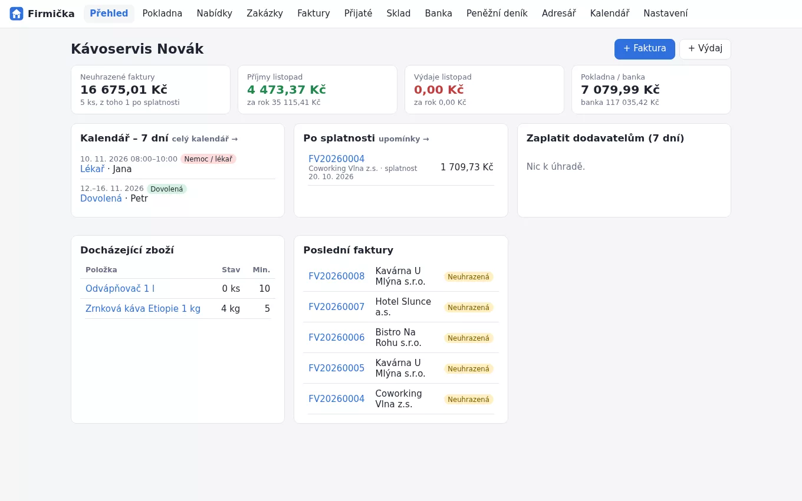
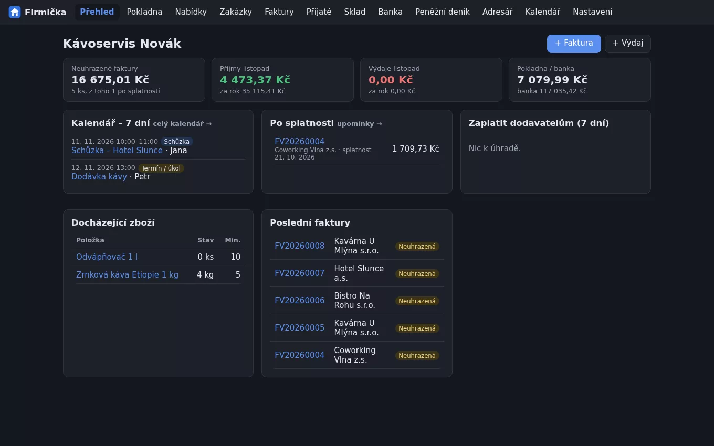
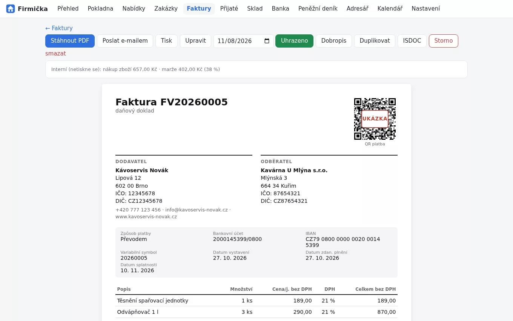
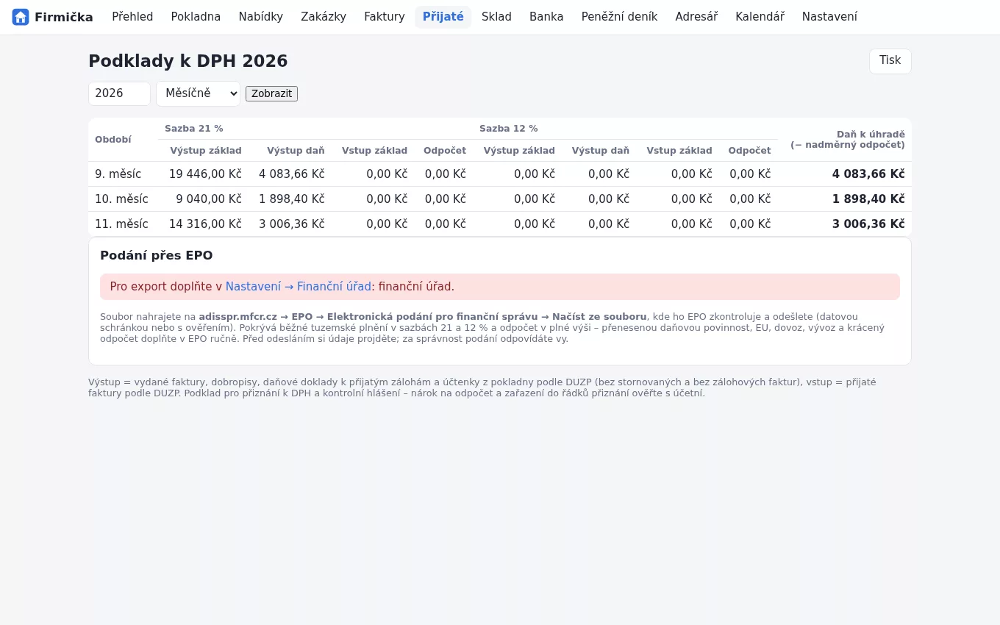
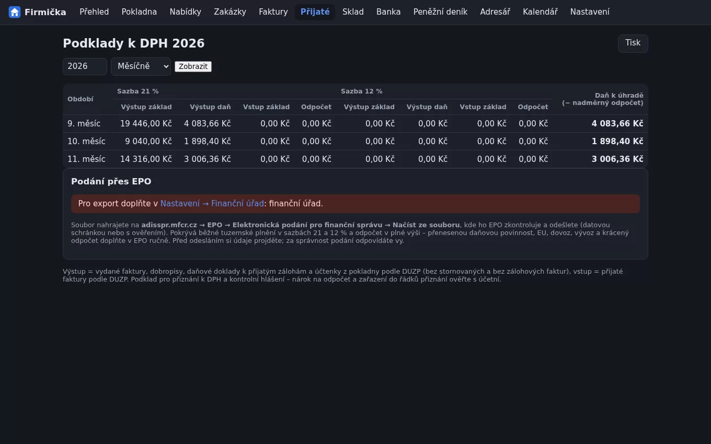
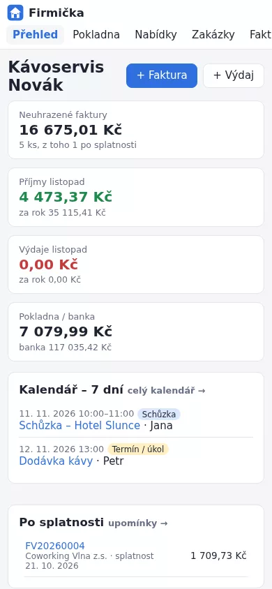
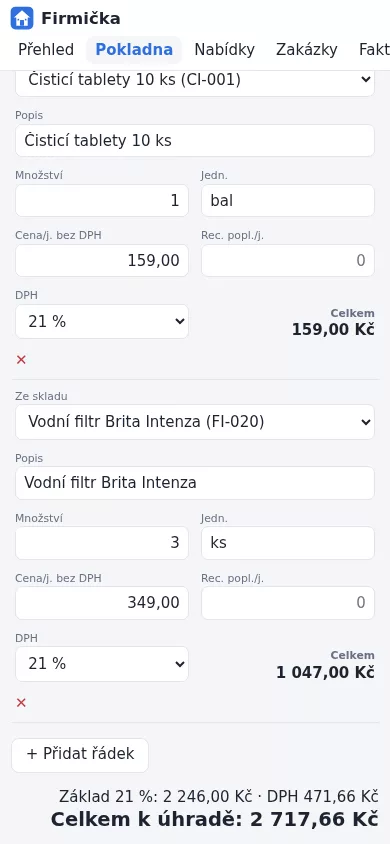
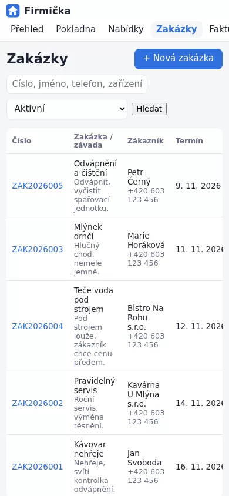

Faktury
Vydané i přijaté faktury, plátce i neplátce DPH.
- QR platba a PDF ke stažení
- Zálohy, dobropisy, daňové doklady k platbě
- Odeslání e-mailem, upomínky ve 3 stupních
Pro živnostníky a malé firmy · testovací verze
EET 2.0 readypřipraveno na evidenci tržeb od 1. 1. 2027Firmička běží u vás v počítači. Žádný cloud, žádná data u cizí firmy. Vystavíte fakturu s QR platbou, prodáte přes pokladnu, odepíšete zboží ze skladu a účetní dostane podklady na jedno kliknutí.


EET 2.0 je ve Firmičce hotové. Od 1. 1. 2027 se musí evidovat každá platba hotově, kartou i QR kódem. Firmička tržbu z pokladny i z faktury zaplacené na místě pošle Finanční správě sama a potvrzovací kód vytiskne na účtenku. Když vypadne internet, prodáváte dál – tržby se odešlou dodatečně. Stačí nahrát pokladní certifikát z MOJE daně.
Prohlídka
Skutečné obrazovky z verze 1.10.9, ukázková firma Kávoservis Novák. Kliknutím obrázek zvětšíte.

Faktura s QR platbou, IBAN a rozpisem DPH. Stáhnete ji jako PDF, pošlete e-mailem nebo z ní jedním klikem uděláte dobropis.
Co umí
Každý uživatel vidí jen ty části, které potřebuje. Kdo jen fakturuje, sklad vůbec neuvidí.
Vydané i přijaté faktury, plátce i neplátce DPH.
Přehled, co máte, kde to je a kolik to stojí.
Prodej přes pult s tiskem účtenky.
Od přijetí opravy po vyzvednutí.
Platby se spárují samy podle variabilního symbolu.
Každý vidí jen to, co potřebuje.
Pro účetní
Na konci měsíce vyberete období a stáhnete soubor. Žádné přepisování faktur z papíru.
POHODA XMLVydané a přijaté faktury, zálohy a dobropisy rovnou do Pohody.ISDOC 6.0.2Český standard elektronické faktury. Načte ho většina účetních programů.DPHDP3 · DPHKH1Přiznání k DPH a kontrolní hlášení jako XML pro portál finanční správy.CSVTabulky pro Excel: vydané a přijaté faktury, peněžní deník.

Na telefonu i tabletu
Firmička se otevírá v prohlížeči, takže ji z telefonu nebo tabletu ve firemní síti otevřete taky. Stačí zapnout práci v síti a přihlásit se. Nic se neinstaluje.
Data přitom zůstávají na jednom počítači ve firmě. Denní zálohy dělá program sám.



Jak vyzkoušet
Nic není ořezané. Pracujte s vlastními daty, ať víte, jestli vám Firmička sedne.
Instalace nepotřebuje práva správce a trvá pár vteřin. Na ploše se objeví ikona s domečkem.
Zadejte IČO a údaje se doplní z registru ARES. Pak první zboží a první faktura.
Cenu licence vám pošleme e-mailem. Po zadání klíče pokračujete dál, jinak program zůstane jen pro čtení. Vaše data se nikdy nezamknou.
Testovací verze 1.11.1 · 10. 11. 2026
Když si nejste jistí, berte instalátor pro Windows. Návod k instalaci a přehled novinek najdete na stránce ke stažení.
Windows 10 a 11. Vytvoří zástupce na ploše a v nabídce Start a sám dělá denní zálohy.
Stáhnout .exeRozbalíte třeba na flashku a spustíte. Hodí se na počítače, kam nejde nic instalovat.
Stáhnout .zipPotřebuje Python 3.10 nebo novější. Postup najdete v návodu na stránce ke stažení.
Stáhnout .zipProgram zatím není digitálně podepsaný, proto Windows při prvním spuštění může ukázat modré okno „Systém Windows ochránil počítač“. Klikněte na „Další informace“ a pak na „Přesto spustit“.
Otázky
Ne. Firmička běží ve vašem počítači a otevírá se v prohlížeči. Internet je potřeba jen pro ARES, odesílání e-mailů a stažení nové verze.
V jednom souboru ve vašem počítači. Program každý den udělá zálohu a uchová ji 30 dní. Zálohu můžete uložit i zašifrovanou na flashku.
Program je hotový a používá se, ale ještě ho ladíme podle zpětné vazby. Nové verze stáhnete tady na webu a nainstalujete přes starou, data zůstanou.
Program přejde do režimu jen pro čtení. Všechno uvidíte, vytisknete a vyexportujete, jen nepůjde zakládat nové doklady. Po zadání licenčního klíče pokračujete tam, kde jste skončili.
Ano. V nastavení přepnete plátce nebo neplátce a faktury se podle toho upraví.
Ano. Jeden počítač je hlavní a ostatní se připojí přes místní síť. Každý má vlastní přihlášení a oprávnění.
Faktury do EU v režimu přenesení daňové povinnosti a export do Money S3. Pokud je potřebujete, napište na mojefirmicka@mojefirmicka.cz.
Nejdřív si Firmičku 30 dní zdarma vyzkoušejte. Když vám sedne, napište na mojefirmicka@mojefirmicka.cz a cenu licence vám pošleme e-mailem – podle počtu uživatelů a toho, co budete používat.